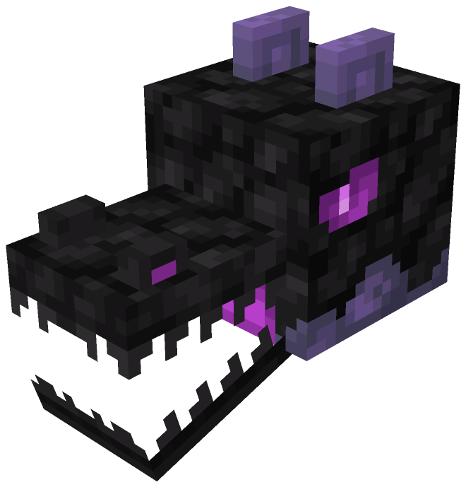
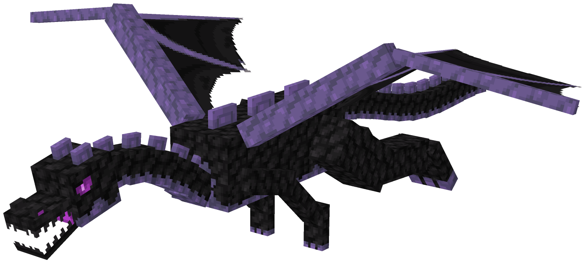
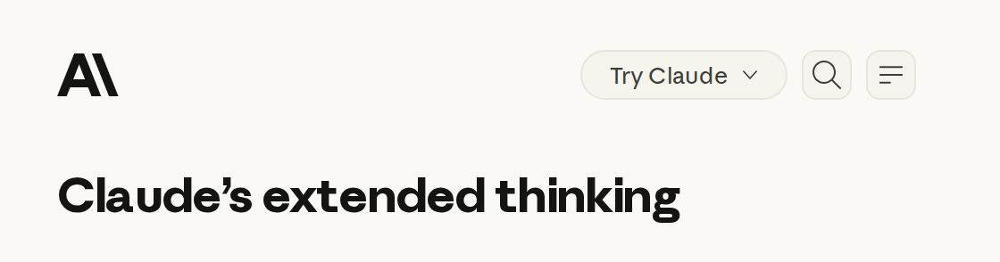
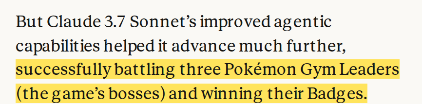
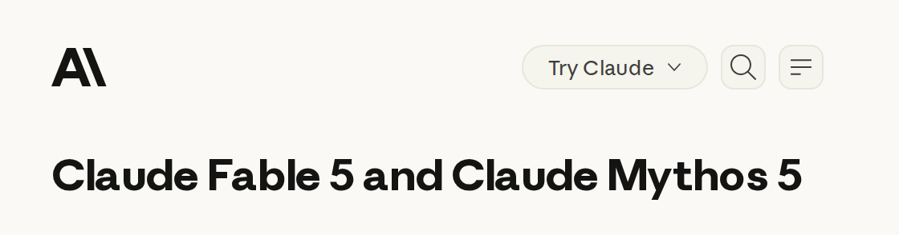
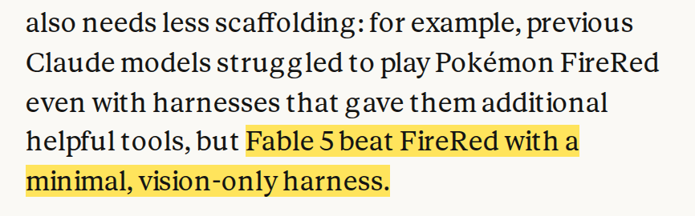

Mine AI MCP
Beating Minecraft
Engineering a reliable long-horizon agent

Ben · aibengineering · 18 November 2026 TODO: name and title as you want them shown
This is up while you're being introduced. Once you've been handed over, → to the intro.
This is the title that went out on the invite. "Shrink the AI's job" is held back for the end of part 4.
Arrows or Space to move. On a clip, Space plays it and → skips it. R restarts it.
Who's talking
I'm Ben
Chief data scientist at Australia's largest bank
Goal Reached! Long service leaveThe time off you get after 10 years Challenge Complete! Beat Minecraft with an LLMLimit-testing AI capabilities, Jul–Sep 2026
For fun Games and pickleballMinecraft, League of Legends. Pickleball is new
The host has just introduced you, so keep it under a minute. Three clicks, one line each.
Say the bank's name out loud. It's only left off the slide and out of this file because they get published.
Leave: I had the time, so I picked a project that would show how far AI could be pushed. It isn't bank work.
The limits have a date on them: July to September 2026. A newer model moves them, and that's the question in part 4.
Most of the building was offline. The stream was the bot playing while it was still being built: 3 full attempts on stream, plenty more in between.
I play Minecraft and League, so I knew what winning takes. Pickleball is the one people can come and talk to you about afterwards.
Then → to part 1: "Today we're talking about Minecraft."
Part 1 of 7
What is
The game, and what it takes to finish it.
"Today we're talking about Minecraft."
The list on the right is the whole talk: seven questions, in order. Point at it, don't read it out. It comes back at the start of each part.
Then: "Before we start, a quick show of hands." → to the poll.
Quick poll
Hands up if you've…
Ask one at a time. → brings up the next one.
Watch how many hands are still up on the last one. That's how fast to do the next slide.
About half or more: one line on the route, then → past its clips.
Only a few: Space plays the route, a clip per step.
If you've never played
Minecraft doesn't tell you how to win
No levels, no instructions. You finish it by killing the Ender Dragon.
Wood punch trees Stone first tools Iron mine and smelt Diamonds deep underground Nether a hostile dimension Pearls hunt endermen Stronghold find the portal 
Ender Dragon in the End
The hands decide how long this takes. A room of players gets one line on the chain, then → goes straight to the next slide.
It's an open world made of blocks. Each step needs the one before: tools to mine, armour to survive, items to open the portal.
The game doesn't script any of this. You have to know the route or work it out.
Space drops the chain to the bottom and plays the clips straight through, about 48 s. Each step lights up while its clip plays. Space pauses, and once it stops on the dragon Space moves on. → always goes to the next slide.
Wood: punch a tree, craft a crafting table, put it down, craft a wooden pickaxe. Stone: mine stone, craft a stone pickaxe. Iron: mine iron ore, smelt it in a furnace, craft an iron pickaxe and iron boots. Diamonds: mine diamond ore.
Nether: pour water on lava to make obsidian, mine it, build the portal frame and light it, arrive, kill blazes for their rods. Pearls: kill an enderman, craft eyes of ender from pearls and blaze powder. Stronghold: throw an eye and follow it, put the last eyes in, the End portal opens. Dragon: it flies, it perches, it dies.
All of it is someone playing by hand, from two YouTube guides (The Aeon Arc and Schmizzle, both CC BY, on the credits slide). My bot crafts without opening a screen, so its run can't show most of this.
This chain comes back later as the run timeline.
Part 2 of 7
Why try it
Games are how people have been testing model capabilities.
So that's the game. Why would anyone try it with AI?
One line here, then → to the Pokémon clip.
Games are how people have been testing model capabilities. A game makes a model keep going for hours, and you can watch whether it does.
Pokémon is the one that stuck. Everyone knows it, so nobody has to explain what winning means.
This is what it looks like. The model gets a screenshot, thinks, presses a button, and gets the next screenshot.
Say whose stream it is. It isn't mine: this is Claude Plays Pokémon, Anthropic's stream on Twitch. Claude 3.7 Sonnet, March 2025, Pokémon Red.
The story, if there's time: it spent dozens of hours trying to leave Cerulean City, got out, then jumped back down a ledge to talk to this person outside the gym. It was stuck again.
Left is the model thinking and the tool it calls. Top right is the buttons it pressed. Here it takes three goes to walk up to someone and talk to them.
It loops by itself with no sound. → moves on.
Can


24 Feb 2 May
12 Dec 16 May


9 Jun 2025 2026
Every time a new model came out, this was the question, whoever made it. The name in the heading keeps changing on its own. One headline per click, in date order.
→ February 2025. Anthropic's own post for Claude 3.7 Sonnet: it beat three gym leaders, 3 of the 8 badges. The model before it couldn't leave the first house. That's the stream from the clip.
→ May 2025. Gemini 2.5 Pro finishes Blue, and Google's CEO posts about it the same day. An outside developer, Joel Zhang, built and ran it; Sundar thanks him in the post. He called it out on stage at I/O later that month too: "Artificial Pokémon Intelligence". And Google's Gemini 2.5 report in July gave it a section of its own: 813 hours to finish.
If asked: Anthropic's Claude 4 launch that same month showed Opus 4's own notes from playing Pokémon.
→ August. GPT-5 finishes Red in 6,470 steps, about a third of what o3 needed. That's the post from Clad3815, the outside developer who ran the stream. OpenAI's developer account had posted the stream when it started, a week earlier, and Greg Brockman shared the Victory Road update; OpenAI didn't post the finish itself.
→ December. Gemini 3 Pro finishes Pokémon Crystal, the harder sequel, without losing a battle. Same outside developer, Joel Zhang; this is his write-up. Google AI Studio shared it.
→ May this year. Claude gets there, a year after Gemini. Anthropic didn't announce that one; this is the write-up from people who follow the stream.
→ June. Fable 5 beats FireRed from screenshots. That's Anthropic's own line, in the launch post.
The line is to scale, a tick a month. Three are inside six months of 2025. Then the runs move on to harder games, and Claude takes until May.
These are screenshots of the pages and posts as they are now, the most official source for each. The yellow is mine.
Shift+→ skips the rest if the room knows all this.
Minecraft is a harder problem
Pokémon
Famous Known around the world
Long Hours of play towards one goal
Waits The game stops while the model thinks
2D A flat map
Single player The whole game runs on one machine
Likewise Famous Known around the world
Likewise Long Hours of play towards one goal
Harder Doesn't wait 20 ticks a second, thinking or not
Harder 3D Blocks in every direction
Harder Multiplayer A server runs the world, and you join it
Both are famous. You don't have to follow AI to know what beating Pokémon or Minecraft means, and that's a big part of why these runs make the news.
And they're the same kind of problem. Hours of play, one goal, and the model has to keep track of what it's doing.
→ The big difference. A Pokémon emulator stops between button presses. The model can think for a minute and nothing happens to it. That's how a run can take 800 hours and still finish.
Minecraft keeps going. 20 ticks a second, and a creeper doesn't wait for the model.
→ And Minecraft brings an extra dimension. Literally. Pokémon is a flat map. In Minecraft you can fall, dig, build, and get lost underground.
→ And Minecraft is multiplayer. Pokémon is one game on one machine. Minecraft is a server that runs the world, and your game joins it as a client. Even single player works that way: it starts a server inside the game and connects to it.
Why that matters for an AI: the bot joins like any other player. The server decides what really happened, so the bot's own idea of its movement has to match the server's exactly (that comes back on the layers slide), the world keeps going whatever the bot is doing, and anyone else on the server can change it.
If someone asks: Pokémon's map never changes and the walkthroughs are all over the internet. A Minecraft world is different every time.
Why now: the models only got through Pokémon in the last 18 months. Minecraft is where it's going next. I did this run in September, and DeepMind published four Gemini agents beating it a month later.
So that's why Minecraft. → to part 3.
Part 3 of 7
Can an LLM
The whole run, making its own calls.
Ask it, leave it a second. Then → : bots have done it already, so what's different here?
Bots have beaten it before
Code decides Every step is hand-written. No LLM.
✓ Beat the dragon24 May 2021. The first bot to finish the game with no human input.
An LLM
The model decides What to do, and when
? Beat the dragonThat's what I wanted to know
AltoClef The dragon dies 3 h 08 in · TacoTechnica on YouTube, 2021
Give credit: we studied AltoClef to work out what an end-to-end run even needs.
24 May 2021, on a random seed, streamed by TacoTechnica. It was the ninth attempt. One command to start, then nobody touches it until the credits.
"First" is AltoClef's own claim, in its README and on the video. I haven't found anyone who disputes it. Say "first bot", not "first computer": a scripted replay of inputs is a different thing.
It runs on Baritone, the pathfinder that comes back in the navigation section.
Space to play AltoClef's own kill, 26 s, from TacoTechnica's stream, with the stream's sound: Taco commentating over the game ("first non-human to beat the game", then "yes baby, let's go" at the kill, "world record"). M mutes it; ?silent plays the silent cut. The bot's view is on the left, a spectator top right, the split timer bottom right. The dragon dies at 3:07:53. When it ends it shrinks into the AltoClef card. → skips it.
Source, if asked: TacoTechnica, "Bot Beats Minecraft for the First Time (Baritone Random Seed Any%)", youtu.be/baAa6s8tahA. Used with credit; it isn't CC.
Top row is the difference: nobody wrote the plan here. The model picked what to do and when.
The question mark on the right is why I did it: can an LLM do the whole run and make its own calls?
Then → to the clip: "Here's the answer."
Before Space: "This is mine at the last step, fighting the dragon on stream, nearly four hours in."
Space to play. Sound is on: it's the stream, with me on the webcam. Let it run to "We did it!". Space again moves on.
Before the talk, click once in the audience window, or the browser may start the clip with no sound.
No sound in the room: open the deck with ?silent for the silent clip of the kill. M mutes it on the spot.
One prompt. Then I didn't touch it.
Play Minecraft in survival mode and defeat the Ender Dragon. Do not stop until you have defeated the Ender Dragon. Use the Minecraft MCP tools for everything you need to do.
… plus a paragraph of strategy tips.
388 tool calls
3 h 56 start to dead dragon
1 death (creeper)
$93 at API prices
Here's what you just watched. It was Claude, run headless with one prompt. Nobody typed anything after that.
That's the "long-horizon" in the title: one go, nearly four hours, 388 calls, nobody helping.
If someone has read result.json, it says 3 h 33. That's Claude Code's own timer, and the clock inside the container ran about 10% slow, so every timer in there came up short. The bot's two-minute waits took 2 min 14 s. The server log and the transcript both say 3 h 56.
Say up front that the prompt had tips in it. It comes back on the fine print slide.
The creeper got it 2 h 11 in.
The run was on a subscription, so $93 is what it would have cost, not a bill.
The whole run is public: transcript, database, server log.
Then → to part 4: "So was that the model, or everything I built around it?"
Part 4 of 7
How do you
Lead in: "So was that the model, or everything I built around it? Let's talk about how you'd even approach beating Minecraft with AI."
The way I think about it: is the hard part the decisions the model makes, or carrying those decisions out in the game?
Pokémon went through the same thing. That's the next slide.
Before building anything, work out which part actually needs solving.
That's the shape of the rest of the talk: lay out the layers, find the ones that weren't working, then go through them.
Early Pokémon wins needed a lot of help
Feb 2025 3 of 8 badges May 2025 Beat Blue Aug 2025 Beat Red May 2026 Beat Red Jun 2026 Beat FireRed
What the harness gave it, beyond screenshots and memory
Lead in: "Pokémon had the same argument." These are the runs from the headlines, in order.
The first one didn't finish: 3 badges out of 8. The model before it couldn't get out of the first house.
Gemini finished first, May 2025. GPT-5 that August. Claude took until May this year.
→ But look at what each one was given. It wasn't just looking at the screen. The harness read the game's memory, marked the tiles it could walk on, and found paths for it.
The links under each list are the closest thing to the source for that harness. Claude 3.7: David Hershey's starter code on GitHub, a cut-down version of the stream's harness (buttons, game memory, an on-screen navigator, summaries). Anthropic's own post only says "basic memory, screen pixel input, and function calls to press buttons and navigate around the screen"; the critic and the walkable tiles are from Julian Bradshaw's LessWrong comparison, April 2025.
Gemini: Joel Zhang's own write-up, with the date he added each piece during the run: goals, the critic, the map and pathfinder, the boulder solver. The code isn't public yet. GPT: no public code for the Red run; the paper is the best description. Opus 4.7: the changelog the stream's runner keeps.
Critic: a second copy of the model that checks in every so often and tries to stop it getting stuck. Claude's and Gemini's both had one.
Gemini's helper agents were a pathfinder and a boulder-puzzle solver, both separate copies of Gemini. Goals: a list of primary, secondary and tertiary goals it kept. Joel also changed the harness during the run, and gave it one hint.
So the early wins turned into an argument about the harness. The developer who ran the Gemini stream said not to treat it as a benchmark.
The count isn't the point, the kind of help is. The early ones did some of the playing for it: reading the game, finding paths, a second model keeping it on track. By Opus 4.7 the critic and hints are gone and the new tools help it see: zoom, saved screenshots.
→ Fable 5 got screenshots and nothing else. That one tells you about the model.
Fable still had buttons and a way to keep notes, like any harness: every one of these had memory, which is why it isn't on the list. What it didn't get was any help reading the game: no map, no walkable tiles, no game data. Anthropic hasn't said exactly what memory it had.
They were slow, too. Gemini's first win took 813 hours. That's from Google's own report. A person takes about 26.
The same report says the harness turned the screen into text for the model, and that taking the screenshots away made little difference. Fable 5's run is the other way round.
That's harness engineering, and it's what the rest of this talk is: what do you build around the model, and what do you leave to it? → next: how you play Pokémon, and why that doesn't carry over to Minecraft.
If asked: Anthropic hasn't published hours or steps for the Fable run. The Gemini and GPT streams weren't built by Google or OpenAI: independent developers ran them.
Playing Pokémon
A person
Person Watches the screen, presses buttons
Buttons A, B, D-pad, Start
Game Pokémon on a Game Boy
An AI
Model Decides what to do next
Harness Runs its turns, keeps its memory
Tools Screenshots, game data
Inputs The same signals the buttons send
Game Pokémon in an emulator Waits for every turn
~28 s a turn
Lead in: "So why can't the model just play Minecraft the way it plays Pokémon? Start with how anyone plays Pokémon."
A person watches the screen and presses buttons. A, B, the D-pad, Start. That's the whole interface.
→ An AI: the model decides, the harness runs its turns and keeps its memory, and the tools give it screenshots and game data, the extras from the last slide. What comes out the end is inputs: the same signals the buttons send. The game can't tell the difference.
→ The arrow under the AI row is one turn, from the model deciding to the inputs reaching the game. Gemini took about 28 seconds a turn: read the screenshot and the game data, think, press a few buttons. And the game box says why that's fine: Pokémon waits for every turn, because that's how the game is built. Slow, but nothing goes wrong, so it's amber, not red.
There's no time on the person's row on purpose: nobody has published how often people press buttons in Pokémon, and I'm not going to make one up.
If asked: the whole game took Gemini's first win 813 hours, from Google's own report. HowLongToBeat's main story for Red and Blue is about 26. About thirty times as long, and it still finished. The 28 seconds is from the stream's own counters: about 106,500 turns in 816 hours on the stream's clock (Julian Bradshaw, LessWrong, June 2025). A turn is one reply from the model, which can be several button presses, and the time includes the harness's helper calls. The second run, with the harness fixed, took 406.5 hours and 36,801 turns: fewer turns, about 40 seconds each.
If asked whether that's typical: across the public runs it's roughly 10 to 60 seconds a turn. Nobody publishes a measured per-turn time; each is a count divided by hours. Gemini's second run about 40 s. Claude 3.7 Sonnet in early 2025, about 14 s (rough counts, ~12,000 actions in ~48 hours). Claude Opus 4.5 on Red, at least 10.6 s (step 170,000 after "over 500 hours", TIME, January 2026). Gemini 3 Pro on Crystal, about 61 s, counting more than 10 hours of API downtime (24,178 turns in 17 days, Joel Zhang's blog). There's no measured figure for how often a person presses buttons.
→ Minecraft is where that stops working.
Playing Minecraft From the model to the game
A person
Person Decides in about ¼ of a second
Keys, mouse A steady stream of input
Java client Draws the world
Java server 20 ticks a second
~0.1 s to adjust a move
An AI
Model Thinks for seconds a move
Harness Turns, memory
Tools Screenshots, game data
Inputs Needed every split second Can't keep up
Java client Draws the world
Java server Doesn't wait
~3 s a turn
A creeper blows up 1.5 seconds after it gets to you.1.5 s model's turn, ~3 s too late
Fast System 1 models like Jev are arriving: quick enough, not yet smart enough.
Model Decides what to do next Claude Solved Harness Turns, memory, compaction Claude Code Solved Tools The bridge out of the harness MCP server Missing Actions Walk here, chop a tree, cook our code Unreliable Client Physics, talking to the server Mineflayer Had bugs
Java client Draws the world W you press W
physics applied
x 12.40 → 12.50 12.40
y 64.0
z -37.25
Mineflayer Does the same job (physics, packets), but programmable. Built for bots. physics applied
x 12.40 → 12.50
y 64.0
z -37.25
Andrew Kelley, 2013. Now PrismarineJS Game What really happens Minecraft Left alone
Java server Doesn't wait Possible? collisions, speed
Don't blame the model for a physics bug.
What the server hears: not the key, the result. Same packet, byte for byte.
Set Player Position 0x1C
xdouble 12.5
feet ydouble 64.0
zdouble -37.25
flagsbyte 0x01 on ground
1A 1C 40 29 00 00 00 00 00 00 40 50 00 00 00 00 00 00
No you're not: back here.
Synchronize Player Position 0x42
teleport idVarInt 7
flagsint 0 absolute
x, y, zdoubles 12.4, 64.0, -37.25
client replies: Confirm Teleportation 0x00, id 7
// hold W, in code
bot.setControlState ('forward' , true )
Minecraft's own binary protocol, over TCP
Actions Told to keep exploring, it walks into the sea and drownsClient One block from the finish, and it can't get up the step
A person playing Minecraft: keyboard and mouse into the Java client, which talks to the Java server.
Your reactions take about a quarter of a second: see something, decide, start moving. Your hands are faster than that. Once you've decided, you steer the mouse continuously and click or tap keys several times a second, so the game gets a steady stream of input. The server ticks 20 times a second whether you're ready or not.
→ The arrow from the person to the keys: once you've decided, your hand corrects a move it's already making in about a tenth of a second, faster than the reaction time, and the mouse keeps moving the whole time.
→ Put the same AI setup in that seat. The model thinks for seconds per move.
→ The arrow under its row: about 3 seconds a turn, from the model deciding to the inputs going out. Thirty times the hand. So the inputs can't keep up: it can't hold W and steer along a cliff edge, or turn to face a skeleton that's shooting at it. Minecraft's controls are built for something that reacts in a fraction of a second, and the server doesn't wait.
→ A creeper blows up a second and a half after it gets to you. Watch: from when it stops to the bang is the whole fuse, and the bar under it is one turn of the model, still going when it goes off. The model can't finish one turn in that time, so "let the model press the keys" doesn't work: it's always late.
If asked how steady the 3 seconds is: timed turn by turn over the winning run's 384 turns, from a tool result coming back to the end of the model's next reply, the average is 3.1 seconds and the middle turn about 2.3. The fastest was 1.4 seconds, nearly the whole creeper fuse on its own; the slowest about 16. And that's the whole round trip, sending the request, waiting for the reply to start and generating it, not just thinking.
→ Not yet, anyway. Fast "System 1" models are starting to show up, like Typesafe AI's Jev in September: they skip writing a token at a time and answer almost instantly. That's the latency you'd need. The intelligence to play a four-hour game isn't at that layer yet.
Sources, if asked: about 230 ms for a simple reaction in the lab (Woods et al. 2015, Frontiers in Human Neuroscience). That's the deciding part. Hands correct a movement already under way in about 100 to 125 ms (Pruszynski et al. 2010, and reviews of online reach corrections), which is the 0.1 s arrow. The model's 3 s is the average from the winning run: 17.8 minutes of API time over 389 turns. The creeper's fuse is 30 game ticks, 1.5 seconds (Minecraft Wiki). Pro StarCraft players get quoted at around 300 actions a minute, but that number isn't well sourced. Jev's own demos include a Minecraft bot; I haven't checked what it can do.
→ So what goes between the model and the game? Start from the end you know. Forget the model: under every game of Minecraft there are two programs, the Java client on your computer and the Java server.
→ You press W.
→ The client works out what that does. It runs the game's physics itself: you're walking forward and nothing's in the way, so x goes from 12.40 to 12.50.
→ Then it sends the result, not the key: I'm at 12.5, 64, -37.25, on the ground. Set Player Position, packet 1C. That's what crosses the wire, in Minecraft's own binary protocol, over TCP. The server never hears "W is held" or "the player is walking". When it lands, the server checks it: could you really get there? It moves you itself, with collisions, and compares.
If asked whether it's protobuf: think protobuf without tags. Fields in a fixed order, the layout known from the packet ID, changing each version. Mojang doesn't publish it; the community reverse-engineered it (minecraft.wiki protocol page), and PrismarineJS wrote it down as data (minecraft-data), serialized by protodef, under node-minecraft-protocol and Mineflayer.
If asked whether the server really never sees keys: since 1.21.2 the client also sends its key states (Player Input, packet 29). In our version the server only uses them for small things, like advancement checks and nudging a minecart. Position is what moves you; the keys don't.
The bytes on the card are the packet before compression and encryption. With compression on there's an extra 00 data-length byte in front, and online-mode servers encrypt the whole stream.
→ Here it says no: say that step puts you inside a block the server thinks is solid. It sends you back: Synchronize Player Position, packet 42, a teleport to where it last agreed you were, and the client's x snaps back to 12.40. The client confirms it (Confirm Teleportation, packet 0), and until it does, the server ignores its moves.
So a client with the wrong physics, or one sending impossible moves, gets snapped back. That's a whole class of bugs, and it's our staircase clip later on this slide: the bot's idea of its own width was a hair off, so the server kept correcting it off the step.
The checks, if asked (vanilla 1.21.4 server, ServerGamePacketListenerImpl): "moved too quickly" is the squared distance from where you were at the start of the tick, minus your squared velocity, over 100 (300 flying with an elytra), times the move packets that tick (up to 5); it logs it and teleports you back. "Moved wrongly" is after the server makes the move itself with collisions: if it ends more than a quarter of a block from where you said, horizontally, outside creative and spectator, it logs it and teleports you back. A move into a block you weren't already in is sent back too, without a log line.
→ So you don't need the game to play the game. Switch the Java client off and put Mineflayer in its place. It does the same job, the physics and the packets, but it's a JavaScript library: programmable, no graphics, no screen. Built for bots. Andrew Kelley started it in 2013, and the PrismarineJS group maintains it now.
→ Instead of pressing W, you write bot.setControlState('forward', true): hold W, in code. That call sends nothing by itself. Mineflayer runs the same physics on its own clock, every 50 ms like the game's ticks, and x goes from 12.40 to 12.50.
→ And out goes Set Player Position, packet 1C: the same packet the Java client sent, byte for byte. To the server it's just a player walking.
If asked where that happens: Mineflayer's lib/plugins/physics.js. setControlState only sets a flag. Every 50 ms, tickPhysics simulates the player (prismarine-physics) and updatePosition sends the position packet if it moved, or position and rotation together if it also turned. Mine AI MCP runs its own fork of Mineflayer 4.39.0, pinned in its package.json, with our physics fixes.
If asked about the keys packet (Player Input, packet 29): on 1.21.4 Mineflayer only sends it for sneak and for steering a vehicle, not for walking; the Java client sends it whenever a key changes. The server only uses it for small things, so walking works the same. A server that went looking for it could tell the two apart.
If asked about other calls: bot.activateItem() is right-click with what you're holding (eat, draw a bow). On 1.21.4 it sends Use Item, packet 3D: which hand, a sequence number, and your yaw and pitch. bot.lookAt(point) turns your head, and the next ticks send your rotation.
→ On top of that, actions. Pathfinding, so "walk here" gets there, and doing things in the world: chop a tree, cook, gather what you need.
→ Then the bridge from those actions out to the model: tools. Here that's an MCP server.
→ The harness that runs the model's turns: Claude Code.
→ And the model. That's the whole way from the model to the game.
Left to right: the model decides, the harness runs its turns, the tools are its way out, the actions do the thing, the client is the bot's body, and the game is the game.
For non-players: the client is a program pretending to be a player. It works out its own movement and tells the server, so its physics has to match the game's.
→ The two green ones. My bet: the model and the harness are solved, or will be soon. A coding agent already does sessions, compaction and memory. So I used Claude Code and didn't build an agent.
→ The red ones are where the runs were going wrong. First the tools: there was no way for a model to reach the game at all. And once there was, nearly everything that slowed a run down or made the model look dumb was in the actions and the physics: "walk here" not finishing, bugs in the library.
Space: actions. Stream 10, 1 August. I'd asked it to keep navigating to new areas until it found animals. The navigate action took the direct route: straight out into the sea and down to the seabed, and it couldn't get back out. What I said live: "You're drowning, so quickly just navigate somewhere so it swims. Ah, you're dead." The model asked for something sensible; the action had no idea water was a problem. That's not an AI problem, it's an actions problem. We added a water-safety reflex that same afternoon. The clip shrinks into the Actions box when it ends.
Space: the client. Stream 7, 21 July, my first stream with the bot, on a stone staircase test course. It walks up the stairs fine, then stops one step below the finish and just stands there. What I said live: "He could just jump up here and get to the end, but he doesn't." The bot thought it was a hair slimmer than the server did, so every jump up that step got pushed back. The fix was a rounding tweak in the physics library, not a prompt. → skips either clip and just turns the box red.
→ So get each layer right starting from the game end, then look at the one before it. Otherwise you end up rewriting prompts to fix a physics bug.
This is the map for part 5. The missing tools layer is the MCP server I built, and its actions and reflexes fill the actions layer. Part 5 also answers the timing problem from the Minecraft slide: one lap through the model takes about 3 seconds and the game ticks 20 times a second, so the reacting has to happen at the game end, in the actions, without waiting for the model.
The other half of the timing problem: some actions take minutes, which is too long for a tool call to sit and wait. Part 5 answers that half on "Some actions take minutes", and the too-fast half on "Tasks and reflexes".
I had a pattern very like this in my first couple of days with Minecraft: one model call picks one action, and the actions do the work on top of Mineflayer. What was missing was the bridge. TODO: which days? The earliest record found is mine_ai's first commit, 21 July 2026, which already has this shape.
Sources, if asked: the packet is "Set Player Position", id 0x1C, for Minecraft 1.21.4 (protocol 769), the version Mine AI MCP runs: X, Feet Y and Z as doubles, then a flags byte, 0x01 on the ground (Minecraft Wiki, Java Edition protocol, the 1.21.4 revision). The values are made up; the bytes are what they encode to. Mineflayer's JavaScript version starts with Andrew Kelley's commits of 2 January 2013; the repo goes back to a C++ version he began in January 2011. It's in the PrismarineJS organisation on GitHub now and sits on node-minecraft-protocol, which reads and writes the packets.
The idea
Shrink the AI's job
Break it down Into bite-sized problems you can program and test
Iterate On each one, until it's reliable
Integrate The best ideas already out there, into one toolkit
One card a click. The icons are shears, a repeater and a map, and they come back on the takeaways.
If you can program it and test it over and over, take it off the model. What's left is the stuff that needs judgement.
Say "programmable and repeatably testable", not "deterministic".
The next part is what I built: an MCP server that takes those jobs off the model.
Part 5 of 7
What did
An MCP server that does what the model can't.
This part is half the talk.
Straight in: the thing I built is an MCP server. Everything in this part is a design choice inside it.
I built an MCP server
The modelClaude
The long horizon
Goals · plans · intention · policy
↓ what it wants done ↑ reports back
Mine AI MCP Execution
Moving · reacting · reporting back
The model can't react in real time ~3 s a turn. A creeper goes off in 1.5 s.
So the server has all the control Pathfinding and combat plan every move. The model never touches the inputs.
The run: mostly the model waiting for actions to finish
18 min the model thinking
3 h 38 the server executing
A standard MCP server, so any MCP client can connect. Used with Claude Code and Codex; the winning run was Claude Code.
So I built an MCP server. MCP is the standard way to hand a model a set of tools, so any harness that speaks it can connect. I've used it with Claude Code and Codex. The winning run was Claude Code.
If asked: other harnesses? Only Claude Code and Codex so far.
The model handles the long horizon: the goal, the plans, what it wants the bot to achieve. Intention and policy.
The MCP server carries out the execution, and everything in between: reacting to what happens, and reporting back to the model.
→ Why split it like that? The model can't react in real time. Last part: about 3 seconds a turn. A creeper goes off a second and a half after it reaches you.
→ So the server takes all the control. Every bit of movement is the server following a plan, and the plan comes from pathfinding or a combat procedure. The model gets no control at the input level.
→ And this is what it looks like over the run: 17.8 minutes of the model thinking, 7.5%. The rest of the time it was waiting for actions to finish: 3 h 38 of the server executing.
One call, one whole job
collect_block0:00
block_name: "logs" · count: 16
"Wood is the base of all early tools; I have an empty inventory and need a crafting table and pickaxe."
16 of 16 in 1 min 17 s
What that one call does
Walks to logs it can collect
Picks the right tool
Mines the block
Picks up the drop
On to the next, until it has 16
smelt_item0:12
item_name: "raw_iron" · count: 24
24 iron ingots, 4 min
craft_item0:17
iron_pickaxe · shield · bucket · iron_chestplate · iron_leggings
5 of 5, 0.3 s
navigate0:55
x: -30 · y: 65 · z: 89, in the Nether
212 blocks, 1 min 11 s
It almost never says "press this button". Every action reports back: succeeded, failed, or partial with how far it got.
Simple, reusable actions. Strong primitives, each with a single goal, so you can check it: yes, that's done. One call, one outcome.
The main one is collect_block. This is the very first call of the winning run, four seconds in: 16 logs, with the model's own reason.
→ The finicky way would be "get logs from this tree": look around, pick a tree, give its position, back and forth. collect_block does all of it: walks to logs it can collect, uses the right tool, mines, picks up the drop, moves on to the next, until it has the count you asked for.
→ Same idea for the rest. Smelting: raw iron and coal in a furnace (coal is the fuel argument, left off the slide), and out come iron ingots. Crafting: five things in one call, and the server works out the recipe tree. Navigation: "go to my house" works once the model knows where the house is. Here it's a Nether fortress it spotted 70 blocks away.
Say "ingots": iron bars are a different block.
→ Every action reports back: it succeeded, it failed, or it partly worked and here's how far it got.
So the model almost never says "press this button". It says "this is what I want to happen". The run tests its decisions, not its fine control of movement.
If asked: there is an escape hatch, raw_action: one look, dig, place, swing, item use, or up to 2 s of one key. The winning run used it twice in 387 calls, about three hours in, to try to carve a pumpkin with shears. It didn't work, and it went back to the normal tools.
If asked: collect_block got reused 25 times for 10 kinds of block, logs at the start to end stone in the End. And every call carries a one-sentence rationale, logged with it, which is why I can show you these.
Some actions take minutes
collect_block 16 of 16 in 7 min 07 s
0:00 one tool call7:07 done
For the frame of the Nether portal, with a few spare. 28 minutes into the winning run.
So how does the model keep control while it waits?
Obsidian is the purple-black block the portal into the Nether is built from. 28 minutes in, it asked for 16, enough for the frame with a few spare.
One tool call, and it ran for about seven minutes. The bar fills by itself, a second a minute.
Walking 2,000 blocks or smelting a stack takes minutes too.
→ So the question: if one call can take ten minutes, how does the model keep control? How can it still adapt while it waits?
A tool call is an async function
In JavaScript terms
const job = collect_block({ block_name: "obsidian" , count: 16 });
let r = await wait(job, { timeout: 120_000 }); // pending: 2 of 16
// then: wait again, look at something first, or cancel(job)
What the model actually sent
0:00 collect_block { block_name: "obsidian", count: 16, wait_timeout_ms: 120000 }2:11 still running 2:13 wait_for_action { action_id, timeout_ms: 120000 }4:28 still running · 2 of 16 4:33 wait_for_action { action_id, timeout_ms: 120000 }6:47 still running · 14 of 16 6:49 wait_for_action { action_id, timeout_ms: 120000 }7:07 16 of 16
Each time a wait runs out (59 times in the run), the model decides
Keep waiting wait_for_action
Look first view_status · query_bot_data
Cancel it cancel_foreground_action
My answer: treat a tool call like an async function in JavaScript. You submit it and get a handle back straight away. Then you await it, with a timeout.
→ This is the obsidian call, as the model really sent it. Submit with a two-minute wait: "still running". Wait again: 2 of 16. Wait again: 14 of 16. Then done at 7:07.
→ When a wait runs out, control comes back to the model with the progress so far, and it decides. Keep waiting. Look at something first, like its status or its database. Or cancel, because it's going too slowly or something more important has come up. The body does one task at a time, so doing something else means cancelling this one first. That happened 59 times in the run.
Nothing gets lost: the result waits until the model collects it, and a new task is refused until it has.
I didn't design it this way at first. I found it by watching the bot play and seeing where it got stuck: a smelting call hit the client's five-minute idle timeout, the server kept working, and the model never heard back.
That led to the bigger question: what should the model control, and what should be automatic, reflexive? That's the next slide: one body, one lock.
One body, one lock
Tasks
The model asks for one at a timetask · resumable_task
Reflexes
Too fast to ask the model aboutsix of them, next slide
navigate "Return to the surface near sheep…"task · 2:31 in Hostile reflex Takes the body and fights a creeper3.5 s navigate carries on Arrived, 412 blocks2 min 04 s in all
17 trips and mining jobs lost the body to a reflex part way. 14 still finished.
That bigger question from the last slide: what does the model control, and what happens on its own?
The bot has one body, so the server has one lock. Whoever holds it moves the body.
Tasks are what the model asks for, one at a time. In the code they're "task" and "resumable_task". Reflexes are the things too fast to ask about: a skeleton shooting, running out of air, about to fall.
The clip: the bot fighting with no call from the model.
Along the bottom, a real trip from the run, two and a half hours in: the model asks to go back to the surface.
→ A creeper shows up, and the hostile reflex takes the body and fights it, three and a half seconds.
→ Then it hands the body back, and because navigate is a resumable task it just carries on. 412 blocks, 2 minutes in all. The model only heard about it afterwards, in the reply, which comes up after the reflexes.
→ Across the run: 17 trips and mining jobs had a reflex take the body part way. 14 still finished. The other 3, the model cancelled itself.
Six reflexes that don't ask the model
Times each one fired in the winning run. 293 in total.
Hostile 250 something's attacking Hunger 28 time to eat Dragon 7 get out of the way Breath 3 running out of air Footing 3 about to fall Fire 2 burning or in lava
A reflex can take the body off whatever the model asked for, deal with it, then hand it back.
293 of these against 388 calls from the model.
Hostile is nearly all of it: 232 fights, 15 dodges, 2 hides, 1 shield.
Each one is there because something killed the bot.
We looked at the existing combat plugins and packages first, then built scenarios for each situation. TODO: confirm the name of the combat package collection (nxg-org?)
3 h 09 in, stuck in an ocean monument
"Automatic evade keeps seizing the body and swimming me deeper into the ocean monument; I need manual control to route north to land."
The model, switching off its own retreat reflex for 3 minutes
"Escaped the ocean monument onto land at full health; normal defensive behaviour should resume for the stronghold dig and End trip."
Two minutes later, switching it back on
My favourite moment in the run. The reflex was wrong for this spot and the model noticed.
It had counted 55 guardians and 3 elder guardians around it.
Reflexes are defaults. The model can overrule one if it gives a reason and an expiry. It did that 9 times in the run.
This is the judgement we left for the model.
Optional loop here: media/monument-loop.mp4.
So reflexes act on their own, and the model still has to find out what they did. That's the reply it gets back: next.
Replies the model can trust
A real reply, 2:33 in · wait_for_action · trimmed
## `navigate`
** Status:** succeeded
** Interruptions:** `[HOSTILE_CONTACT] fight response for creeper#28397 at -99,58,20 (7.9 blocks).`…
** Travel:** 411.97 blocks, including 5.58 during reflexes.…
…
** Vitals:** Health 20/20; hunger 20/20.
## Notifications
** 178 unread notifications.**
…
- hostile: target died; interrupted navigate; health 20 → 20/20
Use read_recent_events to read and advance through recent events.
Markdown by default, because a model reads it. JSON if you ask.
What happened around the action comes with it, reflexes included
One reply carries everything: chat, deaths and fights ride along
Truthful, partial progress included
Another reply, 3:15 in · trimmed
## `collect_block`
** Status:** partial
- Requested: 32
- Inventory gained: 2
…
** Observed stop:** 5 routes in a row stopped without breaking or gaining anything; … inventory gained 2/32 requested items.
The model makes every decision from what comes back, so the reply has to be true.
On the left is a real reply from the run, two and a half hours in, trimmed: the full one is 2,610 characters. Every line you can see is word for word; the dots are where I cut. It's the reply to the trip on "One body, one lock": back to the surface after a cave full of creepers.
→ It's Markdown by default, because a model reads it. Ask for JSON and you get the same thing as structured data.
→ The action's own result comes with what happened around it. Partway through, a creeper turned up and the fight reflex took over for a few seconds. The reply says so, and how far the bot moved while the reflex had the body.
→ And one reply carries everything. MCP gives the server no line into the model: it only gets to speak when the model calls a tool. So anything that happened in the world meanwhile, a chat message, a death, a fight, gets merged into whatever reply goes back next. That's the Notifications block. 373 of the 387 replies in the run carried one. Here the last one is that same creeper fight. read_recent_events reads the rest and moves the cursor on.
→ And it's truthful, partial progress included. Every reply says what actually happened, so each action keeps its own account as it runs: how far it got, what it collected, what stopped it.
This one is three hours fifteen in, on a shoreline. It asked for 32 dirt, got 2, and the reply says why it stopped. So the model walked inland and asked again, and that time it got all 32.
The server keeps the state
In SQLite, on the server
What it's carrying and wearing
6,836 Containers it has opened
Events: reflexes, deaths, worn-out tools320
Its own notes5
The model asks instead of remembering
view_status×24 query_bot_data×14 note_read×1
query_bot_data3:20
"I need the closest dry-land chunk to the stronghold so I can dig down and tunnel to the portal."
SELECT chunk_x*16 AS bx, chunk_z*16 AS bz, … FROM frontier_map_chunks WHERE dimension='overworld' AND surface_water_fraction < 0.2 ORDER BY d2 ASC LIMIT 8;
7 s later navigate -304, 63, -1728: "…go to that dry land to begin the descent toward the portal."
The model doesn't have to hold the game in its head. Inventory, containers, every chunk it has explored, events and its own notes all live in a SQLite database on the server.
That matters on a long run. Claude Code compacts its context as it goes, and nothing the model needs again is lost, because it was never only in the context. TODO: did the winning run actually compact? Say so if it did.
So it asks: view_status 24 times, its own SQL 14 times, its notes once. That once was the very first call of the run, "check for prior progress notes so I can resume rather than restart". There were none.
6,836 chunks recorded as it walked: biome, materials, how much is water.
→ My favourite query. Three hours twenty in, it has found the stronghold, and it's under an ocean. It writes its own SQL: the closest chunk that's less than 20% water. Seven seconds later it walks there, then digs down to the portal room.
The query is trimmed in the middle; the full one also works out the distance to the portal.
How it got reliable
It breaks On a real attempt
Reproduce it A little scenario on a real server
Fix it Until it passes every time
Keep it So it can't sneak back in
Basically rewriting Baritone in TypeScript
493 scenario files so far
32 files credit a Baritone idea
15.4k lines of navigation code
4 libraries forked to fix bugs
TODO: one break → scenario → fix from the rewrite (the AABB bug?) · were the physics fixes sent upstream, or only in the forks?
Nothing got reliable by design. It got reliable by failing in a way we could replay.
It breaks on a real attempt, I build a little scenario on a real server that does the same thing, fix it until it passes every time, and keep the scenario so it can't sneak back in.
This is how I evaluated it: 493 small scenarios under the model first, then whole attempts on top. You can't replay a model's decision. You can replay a stuck jump.
→ The biggest example is navigation. It underpins everything, and it was the most unreliable at first. Baritone is the best Minecraft pathfinder around, but it's Java and runs inside the game. We needed it somewhere we could test it over and over, so I was basically rewriting Baritone in TypeScript.
32 files credit a Baritone idea. That's the "integrate" point: the ideas weren't ours, putting them together was.
Navigation spidered out into physics. If the bot's idea of its own body is wrong, every path is wrong. We found real bugs in the physics libraries, including the AABB collision code, and forked four: mineflayer, prismarine-physics, prismarine-recipe and minecraft-data.
That's what I built. Next: what actually happened in the run.
Part 6 of 7
What happened
The winning run, and what went wrong.
Back to the run from the start of the talk. This time all 3 h 56 of it.
Three slides: where the time went, how many calls failed, and the fine print.
Where the 3 h 56 went
2:11
Stuck in a monument3:09
Down to 1 heart3:50
0:00 1:00 2:00 3:00 3:56
55 min 22 min 99 min 35 min 25 min
0:23 full diamond armour
99 min hunting ender pearls
15 min fighting the dragon
Diamond armour by 23 minutes. Gathering is the part that's solved: wood, stone, iron, diamonds, all code once the model picks what it wants.
The longest stretch is the boring one: finding enough endermen. It explored about 1,560 Nether chunks looking for a better biome and didn't find one.
After the creeper got it, it walked back and picked up all 47 dropped items, then told the code to keep further away from hostiles.
The dragon went 200, 174, 146, 104, 90, 48, 34, 0. At one point the bot had 1.95 health left out of 20.
A third of its calls went wrong
How the 328 finished calls ended
217 106 5
Worked 217 Failed 49 Partly worked 25 Refused 19 Cancelled 13 Cancel requested 5
It still won.
Advancement Made! Free the End
106 of 328: failed, partly worked, refused or cancelled. That's the amber. Don't hide it.
The grey sliver is 5 cancel requests. They're the model asking to stop something, so they're neither.
It won because every failure came back as an honest result, and the model picked what to try next.
Nice little story: it guessed a database table name, got "no such table", read the data dictionary and tried again with the right one.
The fine print
The prompt came with strategy tips
4 tools only exist for the dragon fight
One recorded win TODO: reruns of the winning commit, if any
One model family TODO: Gemini attempt, if you run one
It still can't carve a pumpkin
Say these before anyone asks.
The model called the four dragon tools 47 times. The hardest fight got the most programmed help, which is the whole idea pushed as far as it goes.
The pumpkin: it wanted a carved pumpkin and there's no "use shears on a block" action. It also wanted a full stack of arrows and went into the End with 38.
Part 7 of 7 · for agents that run for hours
What I'd take from this
Shrink the AI's job. If you can program it and test it, do that.Iterate until it's reliable. Break, reproduce, fix, keep the scenario.Integrate. The best ideas were already out there.
The model already made good enough calls. Most of the work was carrying them out.
Go back to the question from the start and answer it. Most of the work in that run was the code, and that was the plan.
None of this is really about Minecraft. It's how you give a slow, smart model a body that works.
It's for any agent that has to keep working after the demo's over.
Questions
The repo
github.com/aibengineering/mine-ai-mcp
huggingface.co/datasets/aibengineering/beat-the-game-minecraft
youtube.com/watch?v=ZjtwWEfFVFY
The code, the winning run's transcript and database, and the recording.
Held back for questions: pathfinding internals, the repo's five code layers, the MCP protocol, the code-size chart (appendix). The SQL memory is on slide 24 and the required rationale is in slide 21's notes.
The QR code is the first link, the repo. Its README links to the other two.
Next slide is the run database, if someone asks "what did it actually do when…".
Credits for the icons and fonts are the last slide.
Appendix: poke around the run
The actual database the bot wrote while it played. Every call, the reason it gave, every reflex.
Load the database (2.4 MB)
Runs in your browser. Nothing gets sent anywhere.
Not part of the 45 minutes.
Press Escape to get the arrow keys back after typing a query.
Same file as the Hugging Face dataset, untouched.
Appendix: the MCP part is tiny
Lines of TypeScript, tests not counted. 58,294 in total.
Actions 15,988 Survival and combat 15,538 Navigation 15,380 World and bot data 4,126 Runtime and session 2,654 MCP server 1,791 about 3% Everything else 2,817
Hooking the model up was the easy bit.
Three big chunks of about 15,000 lines each: doing things, staying alive, getting around.
The part with "MCP" in the name is 3%.
Not part of the 45 minutes. It's here if someone asks how big the MCP part is.
There's another 39,636 lines of tests on top of this.
Appendix: credits
Icons Pixel Perfection by XSSheep and Nova_Wostra, CC BY-SA 4.0.modrinth.com/resourcepack/pixel-perfection-legacy Dragon My renders of that pack's dragon texture, so they're CC BY-SA 4.0 too.
Logos The Claude and Gemini marks are from Simple Icons (CC0) and the OpenAI mark from Lobe Icons (MIT). The trademarks are their owners'.
Pokémon The clip is 18 s of Anthropic's Claude Plays Pokémon stream on Twitch. The Pikachu is drawn for this talk. Pokémon belongs to Nintendo, Creatures and Game Freak.
Clips The route montage: The Aeon Arc and Schmizzle , CC BY. AltoClef's kill: TacoTechnica . Both on YouTube.
Fonts Monocraft by Idrees Hassan and Departure Mono by Helena Zhang, both SIL OFL 1.1.Explorer sql.js , MIT. The database is the one in the Hugging Face dataset, CC BY 4.0.Not official None of the art is Minecraft's own. This talk isn't approved by or affiliated with Mojang, Microsoft or The Pokémon Company.
Not part of the talk. It's here so the credit travels with the deck.
 Goal Reached!Long service leaveThe time off you get after 10 years
Goal Reached!Long service leaveThe time off you get after 10 years

 heard of Minecraft
heard of Minecraft Ironmine and smelt
Ironmine and smelt


 $93at API prices
$93at API prices


 3running out of air
Footing3about to fall
Fire2burning or in lava
3running out of air
Footing3about to fall
Fire2burning or in lava